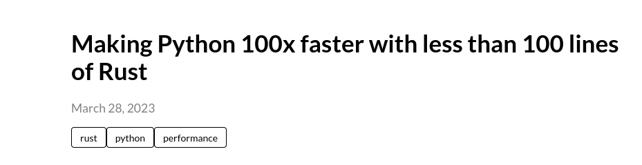
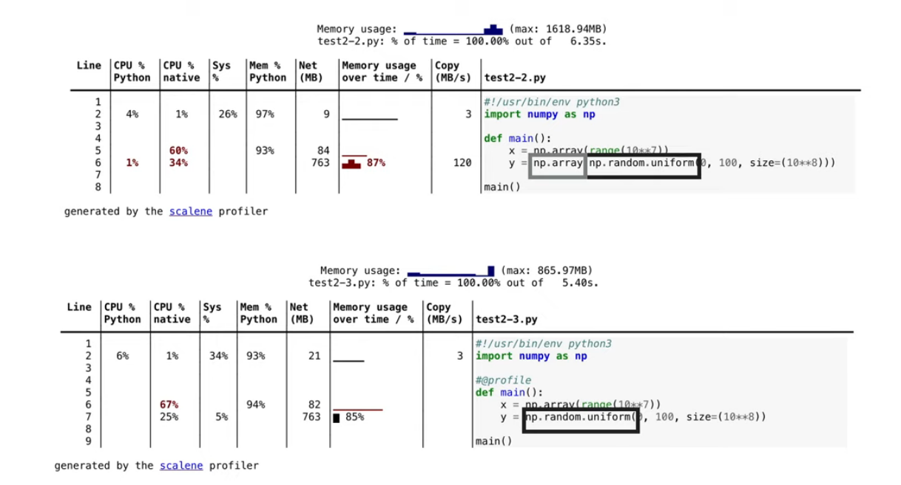

¿Por qué Python tu código es lento?
recomendaciones para mejorar el rendimiento
Dr. Cristián Maureira-Fredes
Senior R&D Manager en 
@cmaureir


¡Python es lento!
¿Qué Python? 👀
😨
¿Python?

¿Python?

🐍
...por otro lado
Python ha demostrado ser un lenguaje que permite escalar sistemas muy complejos, por ejemplo:
YouTube, Dropbox, Disqus, Eventbrite, Reddit, Twilio, Instagram, Yelp, PayPal, etc...
...bueno pero igual me dicen que es más lento que Lenguaje X
😑
- el desempeño depende de tu aplicación
- es posible que tú código tenga la culpa

Peras y Manzanas
¿cómo puedo mejorar el rendimiento?
🤔
Programar en Assembly
Rendimiento
- 🕒 Tiempo de ejecución
- 🗠 Uso de recursos (memoria)
- 🖧 Transmisión de datos
- ...
- 🧑💻 tiempo para escribir código
C++
#ifndef MAINWINDOW_H
#define MAINWINDOW_H
#include <QMainWindow>
#include <QPushButton>
class MainWindow : public QMainWindow
{
Q_OBJECT
public:
MainWindow(QWidget *parent = nullptr);
private slots:
void handleButton();
private:
QPushButton *m_button;
};
#endif // MAINWINDOW_H
#include "mainwindow.h"
MainWindow::MainWindow(QWidget *parent)
: QMainWindow(parent)
{
m_button = new QPushButton("My Button", this);
connect(m_button, SIGNAL(clicked()), this, SLOT(handleButton()));
}
void MainWindow::handleButton()
{
m_button->setText("Ready");
}
#include <QApplication>
#include "mainwindow.h"
int main(int argc, char *argv[])
{
QApplication app(argc, argv);
MainWindow mainWindow;
mainWindow.show();
return app.exec(d);
}
Python
import sys
from pyside6.QtWidgets import QApplication, QMainWindow, QPushButton
class MainWindow(QMainWindow):
def __init__(self, parent=None):
QMainWindow.__init__(self, parent)
self.button = QPushButton("My Button", self)
self.button.clicked.connect(self.handleButton)
def handleButton(self):
self.button.setText("Ready")
if __name__ == "__main__":
app = QApplication(sys.argv)
mainWindow = MainWindow()
mainWindow.show()
sys.exit(app.exec())Midiendo el tiempo
import time
print(time.time() - time.time())
import time
def f(lst, v):
total = 0
t1 = time.time()
for i in lst:
total += i ** v
t2 = time.time()
return total, t2-t1
def g(lst, v):
total = 0
t1 = time.perf_counter_ns()
for i in lst:
total += i ** v
t2 = time.perf_counter_ns()
return total, (t2-t1)/(10**9)
print("Using time.time()")
print(f([1,2], 1))
print(f(range(10), 2))
print(f(range(100), 3))
print(f(range(10_000), 2))
print("Using time.perf_counter_ns()")
print(g([1,2], 1))
print(g(range(10), 2))
print(g(range(100), 3))
print(g(range(10_000), 2))
# Using time.time()
(1, 4.76837158203125e-07)
(3, 4.76837158203125e-07)
(285, 2.384185791015625e-06)
(24502500, 2.2649765014648438e-05)
(333283335000, 0.001733541488647461)
# Using time.perf_counter_ns()
(1, 5e-07)
(3, 5.5e-07)
(285, 1.96e-06)
(24502500, 1.717e-05)
(333283335000, 0.001738651)
Perfilando
cProfile
python -m cProfile main.py
cProfile (1/2)
import random
def f(lst):
t = 0
for i in lst:
for j in i:
t += j
return t
def g(lst):
t = 0
for i in lst:
t += sum(i)
return t
N = 5_000
l = [[random.random() for i in range(N) for _ in range(N)]]
print(f(l))
print(g(l))
cProfile (2/2)
25001425 function calls (25001398 primitive calls) in 3.828 seconds
Ordered by: cumulative time
ncalls tottime percall cumtime percall filename:lineno(function)
3/1 0.000 0.000 3.828 3.828 {built-in method builtins.exec}
1 0.000 0.000 3.827 3.827 perfil.py:1()
1 2.196 2.196 3.149 3.149 perfil.py:18()
25000000 0.953 0.000 0.953 0.000 {method 'random' of '_random.Random' objects}
1 0.596 0.596 0.596 0.596 perfil.py:3(f)
1 0.000 0.000 0.082 0.082 perfil.py:10(g)
1 0.082 0.082 0.082 0.082 {built-in method builtins.sum}
6/1 0.000 0.000 0.001 0.001 :1022(_find_and_load)
6/1 0.000 0.000 0.001 0.001 :987(_find_and_load_unlocked)
6/1 0.000 0.000 0.001 0.001 :664(_load_unlocked)
2/1 0.000 0.000 0.001 0.001 :877(exec_module)
10/1 0.000 0.000 0.001 0.001 :233(_call_with_frames_removed)
1 0.000 0.000 0.001 0.001 random.py:1()
6 0.000 0.000 0.000 0.000 :921(_find_spec)
6 0.000 0.000 0.000 0.000 :1431(find_spec)
6 0.000 0.000 0.000 0.000 :1399(_get_spec)
6 0.000 0.000 0.000 0.000 :564(module_from_spec)
22 0.000 0.000 0.000 0.000 :1536(find_spec)
4 0.000 0.000 0.000 0.000 :1174(create_module)
4 0.000 0.000 0.000 0.000 {built-in method _imp.create_dynamic}
1 0.000 0.000 0.000 0.000 bisect.py:1()
2 0.000 0.000 0.000 0.000 :950(get_code)
96 0.000 0.000 0.000 0.000 :126(_path_join)
6 0.000 0.000 0.000 0.000 :492(_init_module_attrs)
2 0.000 0.000 0.000 0.000 :670(_compile_bytecode)
2 0.000 0.000 0.000 0.000 {built-in method builtins.print}
2 0.000 0.000 0.000 0.000 {built-in method marshal.loads}
4 0.000 0.000 0.000 0.000 :1070(get_data)
96 0.000 0.000 0.000 0.000 :128()
30 0.000 0.000 0.000 0.000 :140(_path_stat)
6 0.000 0.000 0.000 0.000 :198(cb)
30 0.000 0.000 0.000 0.000 {built-in method posix.stat}
12 0.000 0.000 0.000 0.000 {method 'get' of 'dict' objects}
6 0.000 0.000 0.000 0.000 :169(__enter__)
8 0.000 0.000 0.000 0.000 :391(cached)
4 0.000 0.000 0.000 0.000 :380(cache_from_source)
6 0.000 0.000 0.000 0.000 :510(_get_cached)
2 0.000 0.000 0.000 0.000 {built-in method builtins.__build_class__}
6 0.000 0.000 0.000 0.000 :1531(_get_spec)
4 0.000 0.000 0.000 0.000 {built-in method io.open_code}
6 0.000 0.000 0.000 0.000 :179(_get_module_lock)
42 0.000 0.000 0.000 0.000 {built-in method builtins.getattr}
6 0.000 0.000 0.000 0.000 __init__.py:89(find_spec)
110 0.000 0.000 0.000 0.000 :244(_verbose_message)
4 0.000 0.000 0.000 0.000 :1182(exec_module)
28 0.000 0.000 0.000 0.000 :1356(_path_importer_cache)
6 0.000 0.000 0.000 0.000 :721(spec_from_file_location)
6 0.000 0.000 0.000 0.000 :159(_path_isfile)
4 0.000 0.000 0.000 0.000 {method 'read' of '_io.BufferedReader' objects}
6 0.000 0.000 0.000 0.000 :150(_path_is_mode_type)
6 0.000 0.000 0.000 0.000 :100(acquire)
4 0.000 0.000 0.000 0.000 {built-in method _imp.exec_dynamic}
6 0.000 0.000 0.000 0.000 :173(__exit__)
196 0.000 0.000 0.000 0.000 {method 'rstrip' of 'str' objects}
1 0.000 0.000 0.000 0.000 random.py:119(__init__)
1 0.000 0.000 0.000 0.000 random.py:128(seed)
100 0.000 0.000 0.000 0.000 {method 'join' of 'str' objects}
6 0.000 0.000 0.000 0.000 :125(release)
2 0.000 0.000 0.000 0.000 {built-in method _imp.source_hash}
4 0.000 0.000 0.000 0.000 :132(_path_split)
24 0.000 0.000 0.000 0.000 :897(__exit__)
1 0.000 0.000 0.000 0.000 {function Random.seed at 0x7fa9576d9d80}
24 0.000 0.000 0.000 0.000 :893(__enter__)
6 0.000 0.000 0.000 0.000 {built-in method posix.getcwd}
6 0.000 0.000 0.000 0.000 :71(__init__)
2 0.000 0.000 0.000 0.000 :585(_classify_pyc)
4 0.000 0.000 0.000 0.000 {method '__exit__' of '_io._IOBase' objects}
4 0.000 0.000 0.000 0.000 {built-in method builtins.max}
1 0.000 0.000 0.000 0.000 random.py:103(Random)
35 0.000 0.000 0.000 0.000 {built-in method builtins.hasattr}
6 0.000 0.000 0.000 0.000 :746(find_spec)
6 0.000 0.000 0.000 0.000 {method 'format' of 'str' objects}
38 0.000 0.000 0.000 0.000 {method 'rpartition' of 'str' objects}
6 0.000 0.000 0.000 0.000 {built-in method builtins.locals}
2 0.000 0.000 0.000 0.000 :1089(path_stats)
6 0.000 0.000 0.000 0.000 :404(parent)
36 0.000 0.000 0.000 0.000 {built-in method builtins.isinstance}
6 0.000 0.000 0.000 0.000 :180(_path_isabs)
6 0.000 0.000 0.000 0.000 :357(__init__)
36 0.000 0.000 0.000 0.000 {built-in method _imp.acquire_lock}
36 0.000 0.000 0.000 0.000 {built-in method _imp.release_lock}
6 0.000 0.000 0.000 0.000 :826(find_spec)
10 0.000 0.000 0.000 0.000 {method 'endswith' of 'str' objects}
8 0.000 0.000 0.000 0.000 :134()
1 0.000 0.000 0.000 0.000 {built-in method math.exp}
2 0.000 0.000 0.000 0.000 :84(_unpack_uint32)
22 0.000 0.000 0.000 0.000 :71(_relax_case)
6 0.000 0.000 0.000 0.000 {built-in method _imp.is_builtin}
6 0.000 0.000 0.000 0.000 :165(__init__)
2 0.000 0.000 0.000 0.000 :542(_check_name_wrapper)
12 0.000 0.000 0.000 0.000 {built-in method _thread.allocate_lock}
12 0.000 0.000 0.000 0.000 {method '__exit__' of '_thread.lock' objects}
6 0.000 0.000 0.000 0.000 {method 'startswith' of 'str' objects}
1 0.000 0.000 0.000 0.000 random.py:219(__init_subclass__)
12 0.000 0.000 0.000 0.000 {built-in method _thread.get_ident}
4 0.000 0.000 0.000 0.000 :1163(__init__)
2 0.000 0.000 0.000 0.000 :48(_new_module)
1 0.000 0.000 0.000 0.000 {method 'disable' of '_lsprof.Profiler' objects}
6 0.000 0.000 0.000 0.000 {built-in method _imp.is_frozen}
6 0.000 0.000 0.000 0.000 :412(has_location)
10 0.000 0.000 0.000 0.000 {built-in method posix.fspath}
6 0.000 0.000 0.000 0.000 {method 'pop' of 'dict' objects}
1 0.000 0.000 0.000 0.000 {built-in method posix.register_at_fork}
1 0.000 0.000 0.000 0.000 random.py:813(SystemRandom)
2 0.000 0.000 0.000 0.000 :646(_validate_hash_pyc)
4 0.000 0.000 0.000 0.000 {method 'rfind' of 'str' objects}
2 0.000 0.000 0.000 0.000 {built-in method math.log}
6 0.000 0.000 0.000 0.000 __init__.py:96()
2 0.000 0.000 0.000 0.000 :1040(__init__)
4 0.000 0.000 0.000 0.000 {built-in method builtins.len}
2 0.000 0.000 0.000 0.000 :1065(get_filename)
2 0.000 0.000 0.000 0.000 {built-in method from_bytes}
2 0.000 0.000 0.000 0.000 {built-in method _imp._fix_co_filename}
2 0.000 0.000 0.000 0.000 :874(create_module)
1 0.000 0.000 0.000 0.000 {built-in method math.sqrt}
¡Hay más opciones!
Detalles de perfiladores
- ¿Líneas o Funciones?
- ¿Sampling o Tracing?
- ¿Se debe modificar el código?
- ¿Suporte de hilos?
- ¿Multi-processing?
- ¿tiempo en C?
- leaks, copy, memory, ...
- ...GPU?
pip install pyinstrument
from pyinstrument import Profiler
profiler = Profiler()
profiler.start()
# code you want to profile
profiler.stop()
profiler.print()
- Python 3.7+
- sampling / functions
- Compatible con Jupyter, Django, Flask, FastAPI, Pytest
pip install py-spy
py-spy record -o profile.svg --pid 12345
# OR
py-spy record -o profile.svg -- python main.py
py-spy top --pid 12345
# OR
py-spy top -- python main.py
py-spy dump --pid 12345
- Python 2.3, 2.7, 3.3+
- sampling / lines
- permite visualización
pip install yappi
import yappi
def a():
for _ in range(10000000): # do something CPU heavy
pass
yappi.set_clock_type("cpu") # Use set_clock_type("wall") for wall time
yappi.start()
a()
yappi.get_func_stats().print_all()
yappi.get_thread_stats().print_all()
- Python 2.3, 2.7, 3.3+
- tracing / functions
austin
austin python main.py
austin -p 123
- CPython
- sampler / lines
- Visualización
pip install line_profiler
kernprof -l main.py
python -m line_profile main.py.lprof
- Python 3.6+
- tracing / lines
- Motivación con extensiones
pip install scalene (1/4)
- CPU + GPU
- Sugerencias IA
- Compatible con Jupyter
- ...
pip install scalene (2/4)

pip install scalene (3/4)

pip install scalene (4/4)

Detalles de implementación
Reducir el número de variables
Casting innecesarios
Copiando un str
# Llamemos todo esto "test_code"
import random
import string
t = random.choices(string.ascii_letters,
k=1_000)
s = t[:] # ?
s = t # ?
s = str(t) # ?
>>> timeit.timeit("s = t[:]", setup=test_code)
0.9558109600038733
>>> timeit.timeit("s = t", setup=test_code)
0.010780797019833699
>>> timeit.timeit("s = str(t)", setup=test_code)
23.832692831987515
¿Búcles o Comprehensions? (1/2)
def f(years):
leaps = []
for year in years:
if is_leap(year)
leaps.append(year)
return leaps
def g(years):
return [year
for year in years if is_leap(year)]
loop 0.916669155
comprehension 0.788457791
fraction 86.01334371286879
¿Búcles o Comprehensions? (2/2)
def f():
r = []
for i in range(N):
if i % 2 == 0:
r.append(i**3)
return r
def g():
return [i**3
for i in range(N) if i%2 == 0]
loop 0.012062598
comprehension 0.010817907
fraction 89.681401966641
¿Funciones o no?
def calculo(x, y):
return 10**x + y
def f():
base = 2
r = 0
for i in range(1_000_000):
r += calculo(base, i)
return r
def g():
base = 2
r = 0
for i in range(1_000_000):
r += 10**base + i
return r
función 0.221610124
operación 0.18534425
fraction 83.6352810307529
Estructuras básicas (1/3)
Para cadenas:¿manipulación de datos binarios?
- sí:
bytes - no:
str
>>> import sys
>>> a = b"Hola"
>>> b = "Hola"
>>> sys.getsizeof(a)
37
>>> sys.getsizeof(b)
53
Estructuras básicas (2/3)
Para datos mutables:¿son únicos?
- no:
list - sí:
set
Estructuras básicas (3/3)
Para datos no mutables:¿son únicos?
- no:
tuple - sí:
frozenset
¿Clases, Data clases, NamedTuple?
class Persona1:
def __init__(self, nombre, edad):
self.nombre = nombre
self.edad = edad
# def __repr__(self) ¿quizás?
@dataclass
class Persona2:
nombre: str
edad: int
from collections import namedtuple
Persona3 = namedtuple("Persona3",
["nombre", "edad"])
class Persona4(typing.NamedTuple):
nombre: str
edad: int
Persona1 0.00014439
Persona2 0.005883264
Persona3 0.0001975
Persona4 0.001248471
¿No es suficiente?
Caching - functools
docs.python.org/es/3/library/functools.html
import functools
@functools.cache
def factorial(n):
return n * factorial(n-1) if n else 1
# factorial(400): 0.00023379
# factorial(400): 4.4e-07
import functools
@functools.lru_cache
def factorial(n):
return n * factorial(n-1) if n else 1
# factorial(400): 0.00011717
# factorial(400): 3e-07
Cython
# fib.pyx
def fib(n):
"""Print Fibonacci series up to n."""
a, b = 0, 1
while b < n:
print(b, end=' ')
a, b = b, a + b
print()
# setup.py
from setuptools import setup
from Cython.Build import cythonize
setup(
ext_modules=cythonize("fib.pyx"),
)
$ python setup.py build_ext --inplace
>>> import fib
>>> fib.fib(2000)
1 1 2 3 5 8 13 21 34 55 89 144 233 377 610 987 1597
Numba
from numba import njit
import random
@njit
def monte_carlo_pi(nsamples):
acc = 0
for i in range(nsamples):
x = random.random()
y = random.random()
if (x ** 2 + y ** 2) < 1.0:
acc += 1
return 4.0 * acc / nsamples
- Ejecutar operaciones en paralelo
- Vectorización SIMD
- Aceleración con GPU
PyPy (1/2)
- Reemplazo de CPython
- No siempre las últimas versiones (3.9.15)
- Escrito en Python 🤯
# ...no hay código
# porque es...Python
# ...
# ¿Lo conoces no? :P
PyPy (2/2)

¡No es suficiente!
Crea una extensión (1/3) - en C
simple.c
#include <Python.h>
static PyObject* simple_hola(PyObject* self, PyObject* args){
char *msg = "Holi :D";
return Py_BuildValue("s", msg);
}
static char simple_docs[] = "hola(): imprime hola\n";
static PyMethodDef funciones[] = {
{"hola", (PyCFunction)simple_hola, METH_NOARGS, simple_docs},
{NULL, NULL, NULL, NULL}
};
static struct PyModuleDef simplemodule = {
PyModuleDef_HEAD_INIT, "simple", NULL, -1, funciones
};
PyMODINIT_FUNC PyInit_simple(void){
return PyModule_Create(&simplemodule);
}
Crea una extensión (2/3) - en C
setup.py
from setuptools import setup, Extension
setup(name='simple', version='1.0',
ext_modules=[Extension('simple', ['simple.c'])])
pyproject.toml
[build-system]
requires = ["setuptools"]
build-backend = "setuptools.build_meta"
Crea una extensión (3/3) - en C
construir
python -m build
Crea una extensión - en Rust
Recomendaciones en módulos (1/4)
- Iterar archivos y directorios
- ¿
glob? - ¿
Pathlib.glob?
Directories: 172246
Files: 2360091
# glob
Non recursive: 0.01
Recursive: 4.04
# Pathlib.glob
Non recursive: 0.41
Recursive: 1.52
# fastglob.glob
Non recursive: 0.02
Recursive: 0.33
Recomendaciones en módulos (2/4)
std::filesystem::directory_iterator

Recomendaciones en módulos (3/4)
numpy
Recomendaciones en módulos (3/4)
pandas
.iterrows()→.apply(lambda ... ).iterrows()→.itertuples().isin()
¡Necesito más!
3.11 - 10-60% más rápido que 3.10
3.12 - 📈
¿Aplicaste todo esto y no te sirvió nada?
😒
Quizás es hora de utilizar otro lenguaje
🫠
¿Por qué Python tu código es lento?
recomendaciones para mejorar el rendimiento
Dr. Cristián Maureira-Fredes
Senior R&D Manager en
@cmaureir